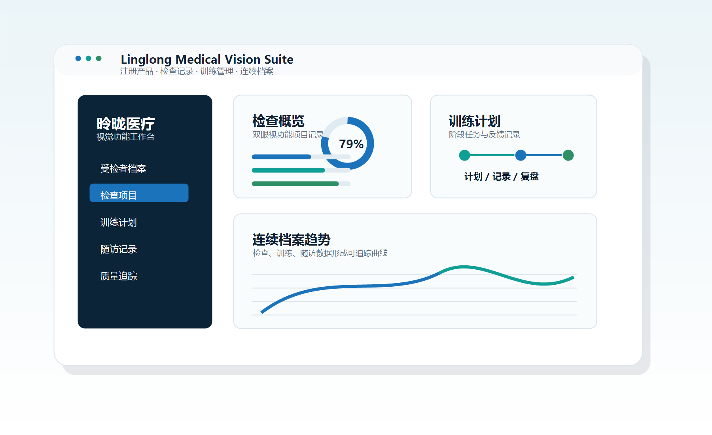

覆盖场景
医疗机构 / 视光中心 / 视觉康复机构
视觉健康数字化解决方案
围绕视功能检查、评估分层、个性化训练、随访管理与数据追踪，构建“筛查—评估—训练—管理”全流程服务，帮助专业机构实现数字化、精细化、连续化升级。

医疗机构 / 视光中心 / 视觉康复机构
筛查—评估—训练—管理
院内训练 + 家庭协同
数字化 / 精准化 / 趣味化
快速发现视功能风险，沉淀结构化检查结果。
量化视功能表现，形成个性化基础档案。
通过数字化训练方案，提高执行效率与依从性。
持续追踪过程与结果，支持长期精细化运营。
视力发育受限，影响清晰视力。
双眼视线不协调，影响双眼视功能。
视力逐渐下降，远距离用眼模糊。
调节、集合等功能发育不完善。
阅读速度慢、容易跳行，影响学习效率。
围绕视觉问题形成学习困难支持。
多维度检查，识别潜在视觉问题风险。
量化评估，明确问题类型与干预方向。
制定训练计划，提升干预效率。
跟踪进展，评估效果，优化方案。
通过数字化系统将筛查、评估、训练与随访管理有机连接，降低沟通成本，提高服务效率。
围绕机构的服务流程、人员配置和业务目标，提供不同的落地侧重点。
适用于综合医院、眼科专科医院及眼视光相关科室，帮助科室把检查、训练、复查和随访纳入统一流程。
适用于门诊、视光中心与验配机构，在传统验配服务之外补充视功能评估和训练管理能力。
适用于视觉康复中心和视功能训练机构，围绕训练执行、家庭配合和阶段评估形成持续管理。
适用于健康管理、筛查服务和渠道合作机构，便于建立标准化服务话术、筛查流程和转化链路。
面向机构决策、科室沟通、人员培训和落地运营，提供可直接用于内部评估的资料包。
参考成熟医疗科技企业首页的信息呈现方式，将产品价值、交付步骤和服务支持放在同一条路径中说明。
梳理机构类型、服务人群、现有流程、人员配置和希望新增的视觉健康服务能力。
确认检查项目、训练内容、院内/家庭协同方式、复查周期和数据记录要求。
完成医生端、训练端、用户端的操作培训，并提供机构内部宣教和沟通资料。
围绕筛查量、训练执行、复查管理和用户反馈进行阶段复盘，持续优化服务流程。
围绕医疗器械注册基础、企业资质和官网表达边界进行内容组织，便于机构合作前期评估。
产品流程围绕检查、评估、训练、复查和随访展开，贴近专业人员的日常服务路径。
通过数字化训练内容和过程记录提升参与度，并帮助机构持续观察训练执行情况。
根据机构反馈持续优化功能、资料和服务流程，让平台更适合长期运营。
欢迎医疗机构、视光中心与视觉康复机构了解昤昽医疗整体解决方案。